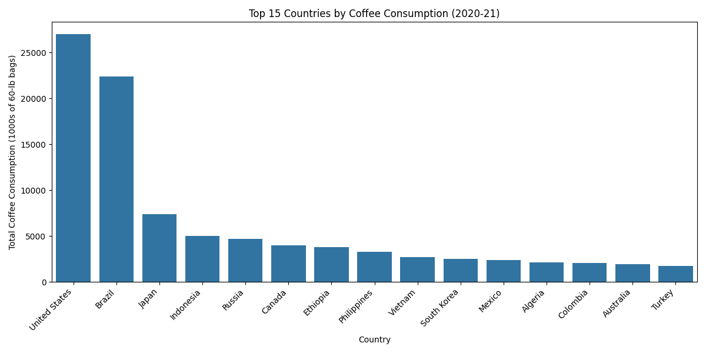
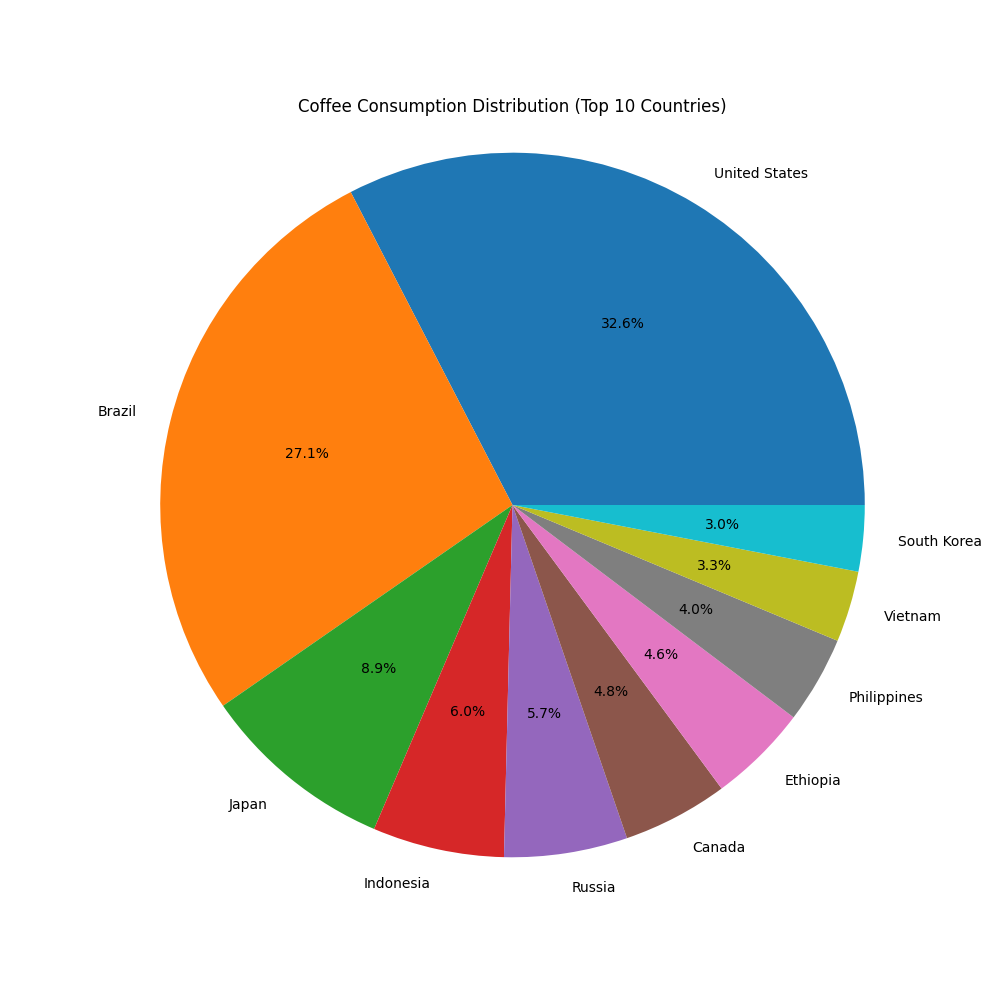
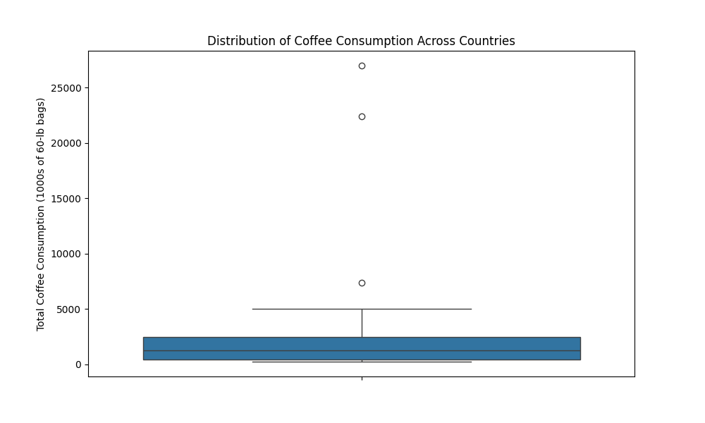
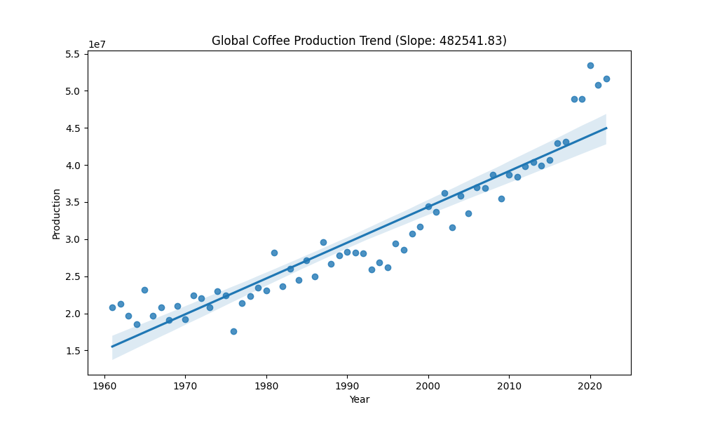

Top 15 Countries by Coffee Consumption (2020-21)
This bar chart shows the top 15 countries with the highest coffee consumption in 2020-21. The United States and Brazil lead in coffee consumption, followed by other major consumers like Japan and Indonesia.
Coffee Consumption Distribution (Top 10 Countries)
This pie chart illustrates the distribution of coffee consumption among the top 10 consuming countries. It provides a clear visual representation of each country's share in the global coffee consumption landscape.
Distribution of Coffee Consumption Across Countries
This box plot shows the overall distribution of coffee consumption across all countries in the dataset. It helps visualize the median consumption, as well as the range and potential outliers in the data.
Production vs Consumption
This scatter plot visualizes the relationship between coffee production and consumption. Each point represents a country, with its position indicating production levels and consumption rates.
Production vs Temperature
This scatter plot shows the relationship between coffee production and temperature. It helps to understand how temperature might affect coffee production in different countries.
Consumption vs Temperature
This scatter plot illustrates the relationship between coffee consumption and temperature. It provides insights into how temperature might influence coffee consumption patterns across different countries.
Animated Global Coffee Consumption Map
This interactive map shows the global distribution of coffee consumption. Countries are color-coded based on their consumption levels, providing a geographical perspective on coffee consumption patterns.
Coffee Production Trend Analysis
This graph illustrates the trend in global coffee production over time. The trend line indicates the overall direction of production changes, helping to identify long-term patterns in the coffee industry.
Correlation Analysis: Production and Climate Variables
Our analysis revealed the following correlations:
- Correlation between Production and Temperature: 0.16 (p-value: 0.6111)
- Correlation between Production and Precipitation: 0.05 (p-value: 0.8686)
These results suggest weak positive correlations between coffee production and both temperature and precipitation. However, the high p-values indicate that these correlations are not statistically significant.
Clustering Analysis: Coffee Production and Climate Factors
This 3D scatter plot shows clusters of countries based on their coffee production, temperature, and precipitation. The clustering helps identify groups of countries with similar characteristics in terms of coffee production and climate conditions.
Key Statistics
- Total global coffee consumption: 110,319.00 thousand 60-lb bags
- Average consumption per country: 2,828.69 thousand 60-lb bags
- Median consumption: 1,253.00 thousand 60-lb bags
These statistics provide an overview of the global coffee consumption landscape, highlighting the total consumption, average consumption per country, and the median consumption value.
Actionable Recommendations
For Coffee Producers:
- Diversify coffee varieties: Given the weak correlation between climate variables and production, explore climate-resilient coffee varieties.
- Implement sustainable practices: Adopt circular economy principles and organic farming methods to improve long-term sustainability.
- Monitor climate patterns: Regularly assess local climate trends to adapt cultivation practices accordingly.
For Policymakers:
- Support research: Invest in studies on climate-resistant coffee varieties and sustainable farming practices.
- Develop incentives: Create programs to encourage adoption of sustainable and climate-smart coffee production methods.
- Promote international cooperation: Facilitate knowledge sharing between coffee-producing countries to address common challenges.
For Consumers:
- Choose sustainable brands: Support coffee producers and brands that prioritize environmentally friendly practices.
- Reduce waste: Opt for reusable coffee filters and cups to minimize environmental impact.
- Stay informed: Learn about the origins of your coffee and the challenges faced by producing regions.